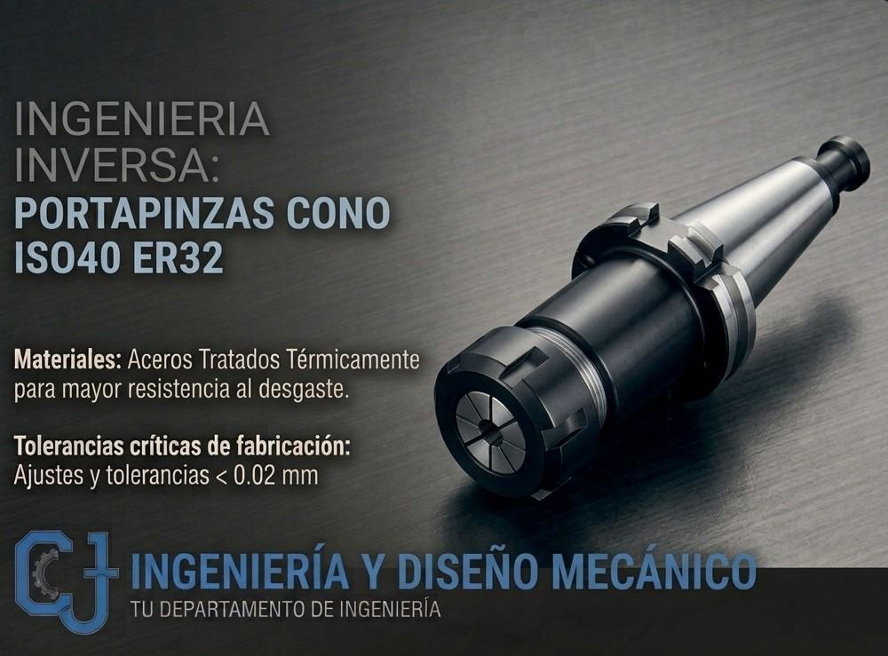
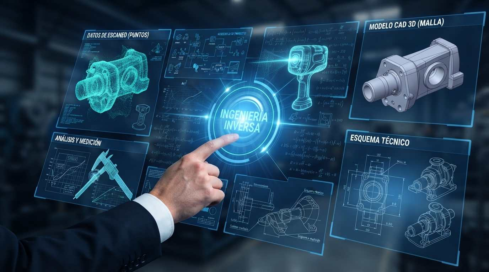
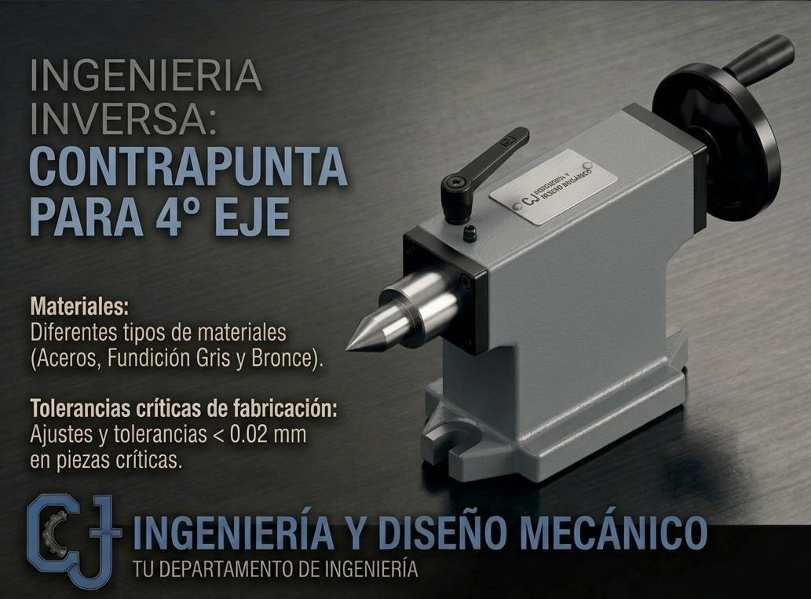
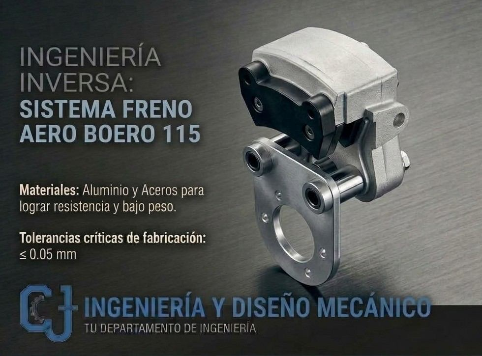

¿Tenés una pieza o un equipo sin planos de fabricación, que ya no se consigue o que falla seguido? Partimos de lo que tengas (la pieza, un plano de ensamble o sus dimensiones funcionales) para reconstruirlo en 3D y desarrollar desde el repuesto hasta el producto completo, con los planos para fabricarlo.
Conocer más
Es el proceso de estudiar un objeto físico, o la información técnica disponible de un equipo, para comprender su geometría, materiales y funcionamiento. Con metrología de precisión y diseño digital paramétrico, reconstruimos el componente o desarrollamos el producto completo y elaboramos la documentación técnica, aun cuando no existan planos originales.
Ayuda a reemplazar repuestos importados costosos o de difícil abastecimiento por fabricación nacional equivalente o mejorada. También sirve para modernizar maquinaria antigua, rediseñar componentes que fallan seguido con el objetivo de extender su vida útil, y conservar el conocimiento técnico de tus equipos.
Relevamos formas complejas, diámetros, roscas especiales y tolerancias con instrumentos calibrados de medición mecánica.
Pasamos los datos medidos a sólidos CAD 3D paramétricos, compensando desviaciones de fabricación o deformaciones por desgaste.
No solo copiamos: analizamos por qué se rompió el componente original y ajustamos su geometría o sus refuerzos para mejorar su resistencia mecánica.
Estudiamos las solicitaciones de servicio para recomendar aleaciones, aceros, tratamientos térmicos o recubrimientos que puedan mejorar el desempeño respecto del original.
Entregamos la ingeniería de detalle en planos 2D con criterios de dibujo técnico normalizado y tolerancias geométricas que facilitan la intercambiabilidad del repuesto en tu máquina.
Adaptamos piezas importadas complejas a procesos y materiales disponibles en la industria nacional, para ayudar a reducir costos y tiempos de máquina parada.



Cada proyecto se presupuesta a medida. Nos acercás la pieza (o una foto con medidas), definimos juntos el alcance y te pasamos el presupuesto.